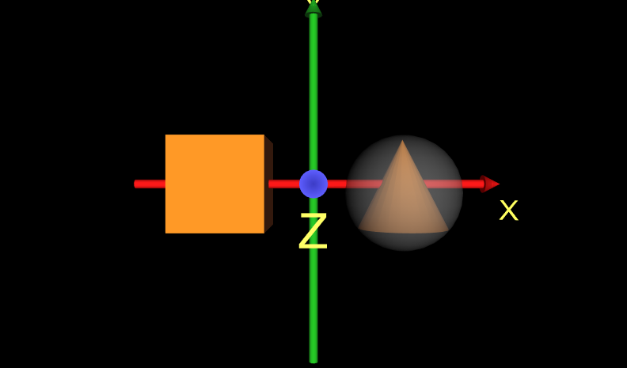

|
A scene can sense when the viewer's cursor is over a shape, has touched a shape, or is dragging atop a shape.
A scene can also trigger animations on a viewer's touch, enabling the viewer to move and rotate shapes.
There are four main action sensor types:
TouchSensor senses touch,
SphereSensor senses drags in a spherical way,
CylinderSensor senses drags cylindrically, and
PlaneSensor senses drags around a plane.
These X3D scenes are adapted directly from the
original VRML 2.0 Sourcebook chapter examples.
Also available:
Introduction to VRML97 SIGGRAPH98 course notes.
|

|


![[1] Figure09.1SpinningCubeTouchSensor.x3d - (default X3D view from 0 0 10)](_viewpoints/Figure09.1SpinningCubeTouchSensor.x3d._VP_Default_viewpoint.png){kind=link}
![[3] Figure09.2SpinningCubeTouchSensorClicked.x3d - (default X3D view)](_viewpoints/Figure09.2SpinningCubeTouchSensorClicked.x3d._VP_Default_viewpoint.png){kind=link}
![[4] Figure09.2SpinningCubeTouchSensorClickedWithAxes.x3d -](_viewpoints/Figure09.2SpinningCubeTouchSensorClickedWithAxes.x3d._VP_Default_viewpoint.png){kind=link}
![[5] Figure09.3ConePlaneSensor.x3d - (default X3D view from 0 0 10)](_viewpoints/Figure09.3ConePlaneSensor.x3d._VP_Default_viewpoint.png){kind=link}
![[6] Figure09.3ConePlaneSensorWithAxes.x3d - (default X3D view from 0 0 10)](_viewpoints/Figure09.3ConePlaneSensorWithAxes.x3d._VP_Default_viewpoint.png){kind=link}
![[8] Figure09.4ConePlaneSensorConstrainedWithAxes.x3d - click and drag Cone](_viewpoints/Figure09.4ConePlaneSensorConstrainedWithAxes.x3d._VP_click_and_drag_Cone.png){kind=link}
![[9] Figure09.4ConePlaneSensorConstrainedWithAxes.x3d - Default viewpoint at (0 0 10)](_viewpoints/Figure09.4ConePlaneSensorConstrainedWithAxes.x3d._VP_Default_viewpoint_at_(0_0_10).png){kind=link}
![[11] Figure09.5FourStackingBlocks.x3d - Hello Cubes.](_viewpoints/Figure09.5FourStackingBlocks.x3d._VP_Hello_Cubes..png){kind=link}
![[12] Figure09.5FourStackingBlocks.x3d - (default X3D view from 0 0 10)](_viewpoints/Figure09.5FourStackingBlocks.x3d._VP_Default_viewpoint.png){kind=link}
![[13] Figure09.5FourStackingBlocksWithAxes.x3d - Hello Cubes.](_viewpoints/Figure09.5FourStackingBlocksWithAxes.x3d._VP_Hello_Cubes..png){kind=link}
![[14] Figure09.5FourStackingBlocksWithAxes.x3d - (default X3D view)](_viewpoints/Figure09.5FourStackingBlocksWithAxes.x3d._VP_Default_viewpoint.png){kind=link}
![[15] Figure09.6SphereSensor.x3d - (default X3D view from 0 0 10)](_viewpoints/Figure09.6SphereSensor.x3d._VP_Default_viewpoint.png){kind=link}
![[16] Figure09.6SphereSensorWithAxes.x3d - (default X3D view from 0 0 10)](_viewpoints/Figure09.6SphereSensorWithAxes.x3d._VP_Default_viewpoint.png){kind=link}
![[17] Figure09.7CylinderSensor.x3d - (default X3D view from 0 0 10)](_viewpoints/Figure09.7CylinderSensor.x3d._VP_Default_viewpoint.png){kind=link}
![[18] Figure09.7CylinderSensorWithAxes.x3d - (default X3D view from 0 0 10)](_viewpoints/Figure09.7CylinderSensorWithAxes.x3d._VP_Default_viewpoint.png){kind=link}
![[19] Figure09.8ClickDragTouchSensorPlaneSensor.x3d - (default X3D view)](_viewpoints/Figure09.8ClickDragTouchSensorPlaneSensor.x3d._VP_Default_viewpoint.png){kind=link}
![[20] Figure09.8ClickDragTouchSensorPlaneSensorWithAxes.x3d -](_viewpoints/Figure09.8ClickDragTouchSensorPlaneSensorWithAxes.x3d._VP_Default_viewpoint.png){kind=link}
![[21] Figure09.9DeskLamp.x3d - Desk lamp](_viewpoints/Figure09.9DeskLamp.x3d._VP_Desk_lamp.png){kind=link}
![[22] Figure09.9DeskLamp.x3d - (default X3D view from 0 0 10)](_viewpoints/Figure09.9DeskLamp.x3d._VP_Default_viewpoint.png){kind=link}
![[23] Figure09.9DeskLampWithAxes.x3d - Desk lamp](_viewpoints/Figure09.9DeskLampWithAxes.x3d._VP_Desk_lamp.png){kind=link}
![[24] Figure09.9DeskLampWithAxes.x3d - (default X3D view from 0 0 10)](_viewpoints/Figure09.9DeskLampWithAxes.x3d._VP_Default_viewpoint.png){kind=link}